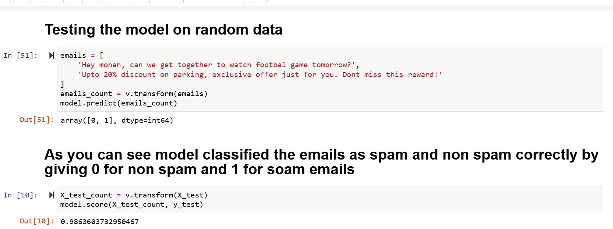

✔Problem Statement
The goal of this project is to develop a machine learning model capable of accurately classifying emails as either spam or not spam (ham) based on their content. The project will leverage labeled email datasets for training and evaluation. The process includes handling the entire machine learning pipeline: text preprocessing, feature extraction using scikit-learn's CountVectorizer, model training with the Multinomial Naive Bayes algorithm, hyperparameter tuning, and performance evaluation. The final model will be saved and deployed to serve as the backend for an automated email spam detection system.
Github Link
🔗 Link →
✔Process
- Step 1: Data Preparation – Prepared the dataset for analysis.
- Loaded the dataset using the
.read_csv function in Jupyter Notebook.
- Analyzed the distribution of spam and non-spam emails using the
groupby function.
- Added a binary column,
spam, assigning 1 for spam emails and 0 for non-spam emails.
- Step 2: Data Splitting – Divided the dataset into training and testing subsets.
- Used
train_test_split from scikit-learn to split the dataset into training and testing subsets.
- Set
X as the Message column (input) and Y as the spam column (target value).
- Step 3: Text Vectorization – Converted text data into numerical format.
- Transformed the
Message column into numerical vectors using scikit-learn's CountVectorizer, enabling compatibility with machine learning models.
- Step 4: Model Selection and Training – Chose and trained the classification model.
- Selected the Multinomial Naive Bayes algorithm for its effectiveness in classifying discrete data.
- Trained the model on the training data and evaluated its performance on the test data.
- Step 5: Model Evaluation – Tested and compared model performance.
- Tested the model on random samples, accurately classifying emails as spam or non-spam.
- Achieved an accuracy of 98% on the test data.
- Compared performance with other classifiers, including Random Forest and Support Vector Machines (SVM), which underperformed in this classification task.
- Step 6: Finalization – Finalized and saved the model.
- Selected Multinomial Naive Bayes as the final model due to its high accuracy and reliable performance.
- Saved the trained model for deployment in future applications, enabling real-time email spam detection.
- Outcome:
- The Multinomial Naive Bayes model achieved 98% accuracy on the test data, proving to be the most effective solution for classifying emails as spam or non-spam.
✔Skills Showcased
Data Cleaning
Data Preprocessing
Feature Engineering
Python
Exploratory Data Analysis
Best Model

✔Conclusion
Saved the trained model for deployment in future applications, enabling real-time email spam detection.